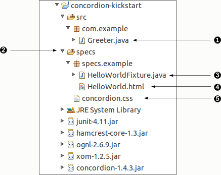
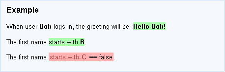

Tutorial
This guide explains the basic mechanics of turning specifications into active specifications using Concordion. It shouldn't take you more than 15-30 mins to complete, assuming you are already familiar with Java, JUnit and XHTML.
- Installation
- The Basics
concordion:assertEqualsconcordion:setconcordion:executeconcordion:execute on a <table>concordion:verifyRows
Once you are comfortable with the basic mechanics, you might like to look at some Advanced Features.
Installation
To kickstart the tutorial, we've created a "Hello World!" project with the following structure:
Download: concordion-kickstart-1.4.3.zip
It contains the latest stable version of Concordion and all its dependencies, a simple "Hello World!" example and a basic Ant build file.
 |
"Greeter.java" is the class we want to test |
"specs" is a source folder for the acceptance tests. JUnit tests are typically held in a folder "test"
but we prefer the name "specs", for the Concordion acceptance tests, to emphasise the fact that
these tests are concerned with external behaviour.
|
|
 |
"HelloWorldFixture.java" is a JUnit test. We'll explain how this works, below.
|
 |
"HelloWorld.html" is the Concordion specification and is processed by the "HelloWorldFixture.java" test. The name of the test fixture and the HTML share the same base name. The test fixture has an optional suffix of "Fixture" or "Test" - for example, it may be named "HelloWorld.java", "HelloWorldFixture.java" or "HelloWorldTest.java".
|
 |
"concordion.css" is a stylesheet to make the specs look nice while you're writing them.
|
Concordion requires JDK 5.0 or above and the following JARs on the classpath:
- concordion-1.4.3.jar
- junit-4.11.jar (or junit-3.8.2.jar)
- hamcrest-core-1.3.jar (required for JUnit 4.11 or later)
- ognl-2.6.9.jar
- xom-1.2.5.jar
These dependencies are included in the distribution.
The Basics
A Concordion active specification consists of two parts: (i) a well-formed XHTML document describing the functionality, and (ii) fixture code written in Java (a special Concordion extension of a standard JUnit test case) that finds concrete examples in the document and uses them to verify the system under test. Both files must be in the same package.
In order for the magic to happen, the document must first be instrumented with commands.
Concordion commands are specified as attributes on elements in the XHTML document. Web browsers ignore attributes that they don't understand, so these commands are effectively invisible.
The commands use a "concordion" namespace defined at the top of
each document as follows:
<html xmlns:concordion="http://www.concordion.org/2007/concordion">
Let's start with a really simple example...
concordion:assertEquals
-
Create a Java package called
"example". -
Create a file
"HelloWorld.html"inside the package containing:<html> <body> <p>Hello World!</p> </body> </html> -
Now instrument the file as follows:
<html xmlns:concordion="http://www.concordion.org/2007/concordion"> <body> <p concordion:assertEquals="getGreeting()">Hello World!</p> </body> </html> -
In the same
examplepackage, create a Java file"HelloWorldFixture.java"containing:package example; import org.concordion.integration.junit4.ConcordionRunner; import org.junit.runner.RunWith; @RunWith(ConcordionRunner.class) public class HelloWorldFixture { public String getGreeting() { return "Hello World!"; } }
-
Now run the
HelloWorldFixtureclass using JUnit.
If you've done it right, JUnit should give you a green bar and a message like this should be printed to the console:
C:\temp\concordion\example\HelloWorld.html Successes: 1 Failures: 0
The message shows the path of the output (results) file for the
test and a summary of success and failure counts. By default, Concordion
outputs to the directory specified by the system property
java.io.tmpdir.
Open the output file in a browser and you should see the
same content as the input document but with the words Hello World!
highlighted in green.

Java Bean Properties
In the example above, the call to "getGreeting()" can
be simplified to "greeting" since Concordion's
expression language understands simple bean properties.
<html xmlns:concordion="http://www.concordion.org/2007/concordion">
<body>
<p concordion:assertEquals="greeting">Hello World!</p>
</body>
</html>
concordion:set
Given a specification like this:
<html>
<body>
<p>
The greeting for user Bob will be: Hello Bob!
</p>
</body>
</html>
We want the first name ("Bob") to be a parameter and the greeting ("Hello Bob!") to be verified against the result returned by the system.
To do this we place <span> tags around the two
significant pieces of text in the document. In HTML,
<span> tags don't have any effect on the
display of the output document.
<html>
<body>
<p>
The greeting for user <span>Bob</span>
will be: <span>Hello Bob!</span>
</p>
</body>
</html>
Now we can instrument the document:
<html xmlns:concordion="http://www.concordion.org/2007/concordion">
<body>
<p>
The greeting for user <span concordion:set="#firstName">Bob</span>
will be:
<span concordion:assertEquals="greetingFor(#firstName)">Hello Bob!</span>
</p>
</body>
</html>
When Concordion processes the document, it will set a temporary
variable #firstName to be the value "Bob" and then
call the greetingFor() method with that value
and check that the result is equal to "Hello Bob!".
Our Java fixture code will need to be updated:
package example; import org.concordion.integration.junit4.ConcordionRunner; import org.junit.runner.RunWith; @RunWith(ConcordionRunner.class) public class HelloWorldFixture { public String greetingFor(String firstName) { return "TODO"; } }
Just as you do when writing unit tests, always make the test fail before you make it pass - to give yourself confidence that it's actually testing something. With the code as it stands you should get a failure (we are expecting "Hello Bob!" but get "TODO").
Now fix the code:
package example; import org.concordion.integration.junit4.ConcordionRunner; import org.junit.runner.RunWith; @RunWith(ConcordionRunner.class) public class HelloWorldFixture { public String greetingFor(String firstName) { return "Hello " + firstName + "!"; } }
Obviously in a real application, the implementation of greetingFor()
would be quite different. The behaviour would not be implemented here, but
in the system code and the fixture would simply call into the system. It might
do this at the system level or at a lower level. It may even call in at the unit
level, if writing a system test would be too slow or unwieldy.
concordion:execute
The execute command has three main uses:
- Executing an instruction with a "void" result.
- Executing an instruction with an object result (to allow multiple properties of the object to be checked).
- Handling unusual sentence structures.
Executing an instruction with a void result
It can occasionally be useful to execute an
instruction that sets up some system state. Every time you do
this, however, alarm bells should ring in your head and you should question
yourself to make sure that you are not inadvertently writing
a script instead of a specification. E.g. a call to "clearDatabase()"
would be a blatant misuse (see Technique for more on this topic).
As a rule of thumb, methods with a void result
called from an execute should start with the word
set or setUp. E.g. setUpUser(#username).
Take the following specification for example:
<html xmlns:concordion="http://www.concordion.org/2007/concordion">
<body>
<p>
If the time is
<span concordion:set="#time">09:00AM</span>
<span concordion:execute="setCurrentTime(#time)" />
then the greeting will say:
<span concordion:assertEquals="getGreeting()">Good Morning World!</span>
</p>
</body>
</html>
Our Java fixture code will look like this:
package example; import org.concordion.integration.junit4.ConcordionRunner; import org.junit.runner.RunWith; @RunWith(ConcordionRunner.class) public class HelloWorldFixture { public void setCurrentTime(String time) { // TODO } public String getGreeting() { return "TODO"; } }
We can actually remove the need for the concordion:set
command by using the special variable #TEXT (which
contains the text of the current element). The abbreviated
instrumentation looks like this:
<html xmlns:concordion="http://www.concordion.org/2007/concordion">
<body>
<p>
If the time is
<span concordion:execute="setCurrentTime(#TEXT)">09:00AM</span>
then the greeting will say:
<span concordion:assertEquals="getGreeting()">Good Morning World!</span>
</p>
</body>
</html>
An alternative would be to change the
getGreeting() method signature to allow the
time to be passed in as a parameter. This is the approach you
should normally take. An execute with no
return value often indicates a "bad smell" - e.g. you're
writing a script or your specification contains too many
variables and covers too many behaviours. However, the
functionality is there if you need it.
Executing an instruction with an object result
Sometimes you need to check more than one result of a behaviour. For example, here we want to check that both the first name and the last name are correctly extracted from the full name:
<html xmlns:concordion="http://www.concordion.org/2007/concordion">
<head>
<link href="../concordion.css" rel="stylesheet" type="text/css" />
</head>
<body>
<h1>Splitting Names</h1>
<p>
To help personalise our mailshots we want to have the first name
and last name of the customer. Unfortunately the customer data
that we are supplied only contains full names.
</p>
<p>
The system therefore attempts to break a supplied full name into
its constituents by splitting around whitespace.
</p>
<div class="example">
<h3>Example</h3>
<p>
The full name
<span concordion:execute="#result = split(#TEXT)">John Smith</span>
will be broken into first name
<span concordion:assertEquals="#result.firstName">John</span>
and last name
<span concordion:assertEquals="#result.lastName">Smith</span>.
</p>
</div>
</body>
</html>
The variable #result is going to be an object returned
by the split() method. This object will have a
firstName and lastName properties.
Assuming our HTML file is in the example package and is
called "SplittingNames.html" then we need a Java fixture called
SplittingNamesTest (or SplittingNamesFixture, or just SplittingNames):
package example; import org.concordion.integration.junit4.ConcordionRunner; import org.junit.runner.RunWith; @RunWith(ConcordionRunner.class) public class SplittingNamesTest { }
If you run the fixture as it stands (i.e. empty), the output should look something like this:

It tells you what you need to do. We'll flesh out our fixture code:
package example; import org.concordion.integration.junit4.ConcordionRunner; import org.junit.runner.RunWith; @RunWith(ConcordionRunner.class) public class SplittingNamesTest { public Result split(String fullName) { return new Result(); } class Result { public String firstName = "TODO"; public String lastName = "TODO"; } }
Run it now and you get:

Let's implement the function. Obviously the implementation should be in the real system not in the test case, but just for fun...
package example; import org.concordion.integration.junit4.ConcordionRunner; import org.junit.runner.RunWith; @RunWith(ConcordionRunner.class) public class SplittingNamesTest { public Result split(String fullName) { Result result = new Result(); String[] words = fullName.split(" "); result.firstName = words[0]; result.lastName = words[1]; return result; } class Result { public String firstName; public String lastName; } }
The test now passes:

Note: Our inner class Result could equally be implemented
with getters instead of public fields. The HTML instrumentation remains
the same.
class Result { private final String firstName; private final String lastName; public Result(String firstName, String lastName) { this.firstName = firstName; this.lastName = lastName; } public String getFirstName() { return firstName; } public String getLastName() { return lastName; } }
Alternatively, the MultiValueResult class makes it easy to return multiple values without creating a new object, or you can return a Map result.
Handling unusual sentence structures
One of the great things about Concordion is that when you're writing the specifications you do not have to worry about how you're going to instrument it. You can just concentrate on making the document as readable as possible.
Most English sentences can be instrumented. If you can't work out
how to instrument it then you can always tweak the wording, but in
general this should not be necessary. The execute
command provides flexibility.
For example, say we have the specification:
<p>
Upon login, the greeting for user <span>Bob</span>
will be: <span>Hello Bob!</span>
</p>
This is easy to instrument:
<p>
Upon login, the greeting for user <span concordion:set="#firstName">Bob</span>
will be:
<span concordion:assertEquals="greetingFor(#firstName)">Hello Bob!</span>
</p>
But what if our specification was written like this:
<p>
The greeting "<span>Hello Bob!</span>" should be given
to user <span>Bob</span> when he logs in.
</p>
In this case, the input parameter Bob occurs after
the output greeting we want to check. We can solve this problem by using
an execute command on the outer element (the <p>).
<p concordion:execute="#greeting = greetingFor(#firstName)">
The greeting "<span concordion:assertEquals="#greeting">Hello Bob!</span>"
should be given to user <span concordion:set="#firstName">Bob</span>
when he logs in.
</p>
How does this work? It works because the execute command is designed to process
commands on its child elements in a special order. First of all it processes any child
set commands then it runs its own command, then any child execute commands
and finally any child assertEquals commands.
concordion:execute on a <table>
When you want to show several examples of a behaviour, repeating the same sentence structure over and over again probably isn't going to be very nice to read. It would be better to use a table.
For example:

You can instrument this table, in a long-winded way, as follows:
<html xmlns:concordion="http://www.concordion.org/2007/concordion">
<head>
<link href="../concordion.css" rel="stylesheet" type="text/css" />
</head>
<body>
<h1>Splitting Names</h1>
<p>
To help personalise our mailshots we want to have the first name
and last name of the customer. Unfortunately the customer data
that we are supplied only contains full names.
</p>
<p>
The system therefore attempts to break a supplied full name into
its constituents by splitting around whitespace.
</p>
<div class="example">
<h3>Examples</h3>
<table>
<tr>
<th>Full Name</th>
<th>First Name</th>
<th>Last Name</th>
</tr>
<tr concordion:execute="#result = split(#fullName)">
<td concordion:set="#fullName">John Smith</td>
<td concordion:assertEquals="#result.firstName">John</td>
<td concordion:assertEquals="#result.lastName">Smith</td>
</tr>
<tr concordion:execute="#result = split(#fullName)">
<td concordion:set="#fullName">David Peterson</td>
<td concordion:assertEquals="#result.firstName">David</td>
<td concordion:assertEquals="#result.lastName">Peterson</td>
</tr>
</table>
</div>
</body>
</html>
However, this is repetitive so Concordion provides a shortcut.
When you place an execute command on a <table> element
the commands on the header row (the row containing <th> elements) are copied to
each detail row (rows containing <td> elements) and the execute
command is run on each detail row.
<html xmlns:concordion="http://www.concordion.org/2007/concordion">
<head>
<link href="../concordion.css" rel="stylesheet" type="text/css" />
</head>
<body>
<h1>Splitting Names</h1>
<p>
To help personalise our mailshots we want to have the first name
and last name of the customer. Unfortunately the customer data
that we are supplied only contains full names.
</p>
<p>
The system therefore attempts to break a supplied full name into
its constituents by splitting around whitespace.
</p>
<div class="example">
<h3>Examples</h3>
<table concordion:execute="#result = split(#fullName)">
<tr>
<th concordion:set="#fullName">Full Name</th>
<th concordion:assertEquals="#result.firstName">First Name</th>
<th concordion:assertEquals="#result.lastName">Last Name</th>
</tr>
<tr>
<td>John Smith</td>
<td>John</td>
<td>Smith</td>
</tr>
<tr>
<td>David Peterson</td>
<td>David</td>
<td>Peterson</td>
</tr>
</table>
</div>
</body>
</html>
This instrumentation has identical behaviour to the previous example.
concordion:verifyRows
Sometimes you want to check the contents of a collection of results returned
from the system. In the Fit Framework you might use a RowFixture.
In Concordion, you use the verifyRows command.
For example, while writing a user administration tool we might write a specification like this describing the behaviour of the search functionality:

The idea is that in the fixture code we'll set up the users in the system, perform a search and then confirm that the right users (and only these users) were returned in the search results. If too many, too few, or the wrong users were returned we want the test to fail.
The instrumented HTML source for the specification looks like this:
<html xmlns:concordion="http://www.concordion.org/2007/concordion">
<body>
<h1>Partial Matches</h1>
<p>
Username searches return partial matches, i.e. all usernames containing
the search string are returned.
</p>
<div class="example">
<h3>Example</h3>
<p>Given these users:</p>
<table concordion:execute="setUpUser(#username)">
<tr><th concordion:set="#username">Username</th></tr>
<tr><td>john.lennon</td></tr>
<tr><td>ringo.starr</td></tr>
<tr><td>george.harrison</td></tr>
<tr><td>paul.mccartney</td></tr>
</table>
<p>Searching for "<b concordion:set="#searchString">arr</b>" will return:</p>
<table concordion:verifyRows="#username : getSearchResultsFor(#searchString)">
<tr><th concordion:assertEquals="#username">Matching Usernames</th></tr>
<tr><td>george.harrison</td></tr>
<tr><td>ringo.starr</td></tr>
</table>
</div>
</body>
</html>
The syntax for a verifyRows command is:
#loopVar : expression
Where expression returns an
Iterable object with a predictable iteration order,
(e.g. a List, LinkedHashSet or a
TreeSet).
And #loopVar provides access
to the current object during iteration and allows the
assertEquals method to check its value.
The order of the items in the table being verified must match the iteration order of the items returned by the expression. You may need to sort the items to ensure they are in a known and consistent order. In our example, we are using alphabetical order ("george" before "ringo").
The skeleton fixture code will look like this:
@RunWith(ConcordionRunner.class) public class PartialMatchesTest { public void setUpUser(String username) { // TODO: Set up user in the system } public Iterable<String> getSearchResultsFor(String searchString) { // TODO: Perform the search and return the real search results return new ArrayList<String>(); } }
If we run the test with this skeleton we get:

Two rows are missing because our search function is not implemented and returns an empty set.
For the purposes of demonstration, let's just implement the functionality inside the fixture instead of calling into the system:
@RunWith(ConcordionRunner.class) public class PartialMatchesTest { private Set<String> usernamesInSystem = new HashSet<String>(); public void setUpUser(String username) { usernamesInSystem.add(username); } public Iterable<String> getSearchResultsFor(String searchString) { SortedSet<String> matches = new TreeSet<String>(); for (String username : usernamesInSystem) { if (username.contains(searchString)) { matches.add(username); } } return matches; } }
Now when we run it we get a success:

These are the essential features of Concordion and should be all you need to get started. Read the page on Technique for advice on the approach to writing the specifications, or see below if you wish to look at advanced features.
Advanced Features
Annotations
Implementation Status
You can include partially-implemented specifications in your normal build without breaking the build, by annotating your fixture classes with one of the following annotations:
- @ExpectedToPass
- @ExpectedToFail
- @Unimplemented
For example:
import org.concordion.api.ExpectedToFail; import org.concordion.integration.junit4.ConcordionRunner; import org.junit.runner.RunWith; @ExpectedToFail @RunWith(ConcordionRunner.class) public class GreetingTest { public String greetingFor(String firstName) { return "TODO"; } }
See here for an explanation of the semantics of each annotation.
Fail-Fast
since 1.4.4After an exception occurs, by default, Concordion continues processing the current specification so it can show all the problems not just the first one.
In cases where you want Concordion to stop processing the current specification after any exception occurs, add the @FailFast annotation to the fixture class.
The @FailFast annotation has an optional onExceptionType parameter that allows a list of specific exception types to be specified. In this case, Concordion will only stop processing if any of the specified exception types occur. For example:
import org.concordion.api.FailFast; import org.concordion.integration.junit4.ConcordionRunner; import org.junit.runner.RunWith; @FailFast(onExceptionType={DatabaseUnavailableException.class, IOException.class}) public class MyDataTest { public void connectToDatabase() { .... } }
If using the concordion:run command, adding the @FailFast annotation to the corresponding fixture will cause the specification to fail-fast if any of the specifications it runs fail-fast. For this to work, the @FailFast annotation is required on the fixture classes for both the calling and called specifications.

Breadcrumbs
To make it easier to navigate around the results, and to remove the headache of having to maintain upward links manually, breadcrumbs are automatically added to output.
In order for breadcrumbs to be generated, certain conventions must be followed.

concordion:run
This command, contributed by Stein Kåre Skytteren, lets you link to another specification and run it, displaying the link's background in green / red / gray as appropriate.
You might use this to create a page containing a list of all the acceptance tests for a feature, in a similar way you would use a JUnit test suite.
You can even nest the pages to form a hierarchical index, with results aggregated to display a single green / red / gray result for all specifications accessible from the link.
concordion:assertTrue
For example:
<p>
When user <b concordion:set="#firstName">Bob</b>
logs in, the greeting will be:
<b concordion:assertEquals="greetingFor(#firstName)">Hello Bob!</b>
</p>
<p>
The first name <span concordion:assertTrue="#firstName.startsWith(#letter)">starts
with <b concordion:set="#letter">B</b></span>.
</p>
<p>
The first name <span concordion:assertTrue="#firstName.startsWith(#letter)">starts
with <b concordion:set="#letter">C</b></span>.
</p>
Will result in this output:

For symmetry, there is also an assertFalse command.
When to use it?
In most cases, assertEquals is a better choice than assertTrue as its error message is more intuitive.
assertTrue is useful when the fixture needs to know the expected value in order to perform the test. For example, when testing an asynchronous system the fixture may need to poll for an expected value. The alternative would be to put in a sleep before getting the value, but that leads to slow and fragile tests.
JUnit support
JUnit 3.x
To run Concordion with JUnit 3.x, the Concordion fixture must extend ConcordionTestCase. For example:
package example; import org.concordion.integration.junit3.ConcordionTestCase; public class HelloWorldFixture extends ConcordionTestCase { public String getGreeting() { return "Hello World!"; } }
JUnit 4.x
To run Concordion with JUnit 4.5 or later, the Concordion fixture should use the ConcordionRunner. For example:
package example; import org.concordion.integration.junit4.ConcordionRunner; import org.junit.runner.RunWith; @RunWith(ConcordionRunner.class) public class HelloWorldFixture { public String getGreeting() { return "Hello World!"; } }
Note that JUnit 4.4 and earlier are no longer supported due to changes in JUnit's API between 4.4 and 4.5.
Returning a Map result
As described in the tutorial, to check more than one result of a behaviour, you can return an object from the execute command. An alternative is to return a Map object, for example:
public Map split(String fullName) {
String[] words = fullName.split(" ");
Map<String, String> results = new HashMap<String, String>();
results.put("firstName", words[0]);
results.put("lastName", words[1]);
return results;
}
This is particularly useful when calling existing methods that return Maps, or when using a JVM language with native language support for Maps, such as Groovy.
Returning a MultiValueResult
The MultiValueResult class makes it even simpler to return more than one result from the execute command. For example, SplittingNamesTest can be simplified to:
package example; import org.concordion.api.MultiValueResult; import org.concordion.integration.junit4.ConcordionRunner; import org.junit.runner.RunWith; @RunWith(ConcordionRunner.class) public class SplittingNamesTest { public MultiValueResult split(String fullName) { String[] words = fullName.split(" "); return multiValueResult() .with("firstName", words[0]) .with("lastName", words[1]); } }
The specification can reference the properties of the MultiValueResult as if they were bean properties, as shown in the Splitting Names specification.
Linked Test Data
A special variable "#HREF" lets you access the href attribute for a link. This
can be used when you want to reference test data from a specification.
[More details]